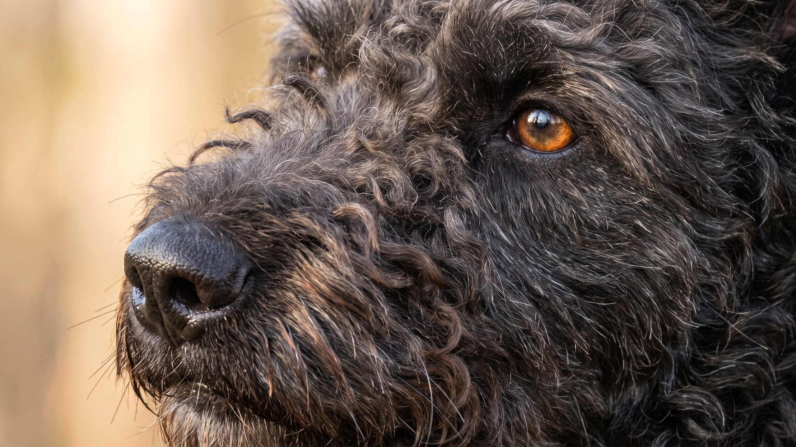

Пуми выглядит как будто природа поставила пуделю пастушьи задачи: кудрявая шерсть пружинит завитками, уши стоят торчком, но с характерным заломом вперёд, взгляд сверлит. Эта венгерская порода несколько веков гоняла овец по карпатским предгорьям и до сих пор помнит об этом каждую прогулку. Голос у пуми поставлен соответствующий: звонкий, настойчивый и частый. Ниже: что это означает в городской квартире и кому порода подходит.
🐾 Ваш питомец — пуми?
Заведите профиль в AnimaLife: приложение запомнит породу, возраст и вес и будет подсказывать по уходу именно для неё. Вопросы AI-ветеринару — круглосуточно и бесплатно.
Завести профиль → Завести в MAX →
У вас iPhone? AnimaLife есть в App Store
Шерсть пуми образует тугие пружинистые завитки: не шнуры, как у пули, а упругие кольца по всему телу. Подшёрсток мягкий, остевой волос жёсткий: вместе они закручиваются сами и держат форму без вмешательства. Расчёска здесь разрушает структуру, а не помогает.
Груминг пуми проще, чем у длинношёрстных пород, но пропускать регулярную стрижку не стоит: перерощенная шерсть начинает сваливаться и тянуть кожу. Если хотите разобраться с техникой стрижки, ваш грумер должен знать породу.
Пуми весит 8-13 кг, но энергии в нём хватит на собаку вдвое крупнее. Порода создавалась для самостоятельной работы на пастбище: принимать решения без команды, быстро реагировать, не уставать. Эти качества никуда не делись в городском варианте.
Дрессируется пуми охотно и быстро: порода смышлёная, в работу включается с интересом. Грубый тон и повторяющиеся скучные команды эффекта не дают. Разнообразие, поощрение и короткие сессии работают куда лучше.
Пуми голосистый. Это написано в стандарте породы: пастушья собака должна лаем сообщать о положении отары, отгонять хищника, звать пастуха. Инстинкт жив, и в городских условиях он срабатывает на каждый шорох за дверью, незнакомца в подъезде, велосипедиста в парке.
Полностью убрать лай у пуми нельзя: это часть породного поведения. Но управлять им реально.
Пуми в квартире в панельном доме с тонкими стенами: честный вызов. Соседей стоит предупредить заранее. В частном доме или с хорошей звукоизоляцией ситуация проще.
Порода сложится в хорошую жизнь с хозяином, который готов к активному партнёрству: ежедневные прогулки с нагрузкой, тренировки, работа с голосом. Пуми хорошо чувствует себя в семьях с детьми школьного возраста, которые умеют обращаться с собакой.
Порода не подходит:
Пуми живёт 12-14 лет. Порода относительно здоровая; профилактические осмотры и контроль суставов: стандартная забота для активной собаки среднего размера. Конкретные вопросы по здоровью обсуждайте с ветеринаром.
🐾 У вас пуми?
AnimaLife соберёт уход под породу: к каким болезням есть склонность, что проверять по возрасту, чем кормить и когда пора к врачу. Бесплатно, прямо в мессенджере.
Собрать план ухода → Собрать в MAX →
У вас iPhone? AnimaLife есть в App Store
🐾 Понравился разбор?
Подпишитесь на канал — каждый день разбираем по одному тревожному симптому у кошек и собак: что в пределах нормы, а когда пора к врачу. Подпишитесь, чтобы не пропустить разбор, который может спасти здоровье вашего питомца.
Материал носит информационный характер и не заменяет очную консультацию ветеринара.